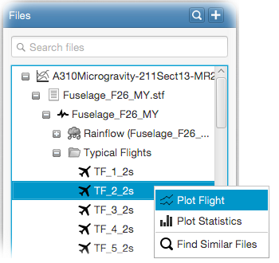

You can plot each typical flight once the stress sequence is generated. Following video demonstrates how to do this.
Typical flights can be plotted by right-clicking on a flight (or multiple flights) in the file tree
and selecting Plot Flight from the popup menu.

By default, all peaks of the selected flight(s) will be plotted. Next
sections describe how to zoom into the plot, decomposing and plotting stress components, showing peak information and highlighting
flight segments, respectively.
You can zoom-in/out via the mouse wheel or by selecting the zoom area. For this, press and hold the left mouse button from the
top-left corner to the bottom-right corner of the area you want to zoom (see figure below). Drag the mouse to any other direction
to zoom back to original view.
1G, increment, delta-p and delta-t stress components can be decomposed and plotted separately via the Select Stress Components input panel.
Select the stress components you want to plot and click Refresh. Note that, stress components can be plotted on the
total stresses by selecting the Plot on total stress option. By default, all components (i.e. total stress)
is plotted.
Select the peak information to be displayed from the Show Peak Information input panel. By default total stress is
displayed. You will see that the selected information will be displayed on the bottom-right corner of the plot view as you pick
new peaks.
Flight segments can be highlighted from within the Show Segment input panel. For this, select the flight
and the segment you want to highlight, and click Show. Flight segment is highlighted on the spectrum plot via
interval markers.